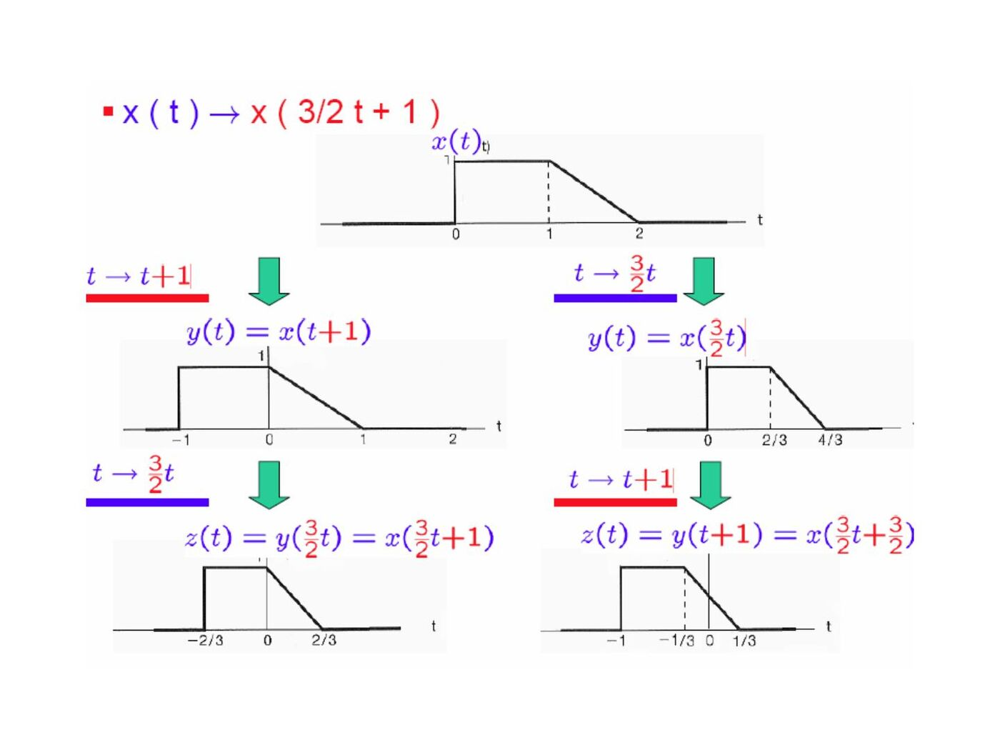

· EEM301
EEM301 Sinyaller ve Sistemler I: Chapter 1 — Sinyaller ve Sistemler (İsmail Avcıbaş)
EEM301 – Sinyaller ve Sistemler I · 16.08.2006 · 18.10.2026
Başkent Üniversitesi EEM301 dersi için İsmail Avcıbaş’ın hazırladığı Chapter I: Signals and Systems sunumu (91 sayfa). Kaynak PowerPoint’in oluşturulma tarihi 16 Ağustos 2006, son kaydı 1 Ekim 2009. Metni görsel olarak saklanan slaytların konu anlatımı, temel formülleri ve örnekleri aşağıya aktarıldı. Sunumun PDF kopyası yazının sonunda indirilebilir.
Signals and systems
A signal carries information; a system transforms input signals into output signals. The examples include a weekly stock index, a monochromatic image, speech recordings and the source and capacitor voltages in an RC circuit. Continuous-time signals x(t) are defined for real t; discrete-time sequences x[n] are defined at integer indices.
Signal energy and power
Over a finite interval, energy is ∫|x(t)|²dt in continuous time and Σ|x[n]|² in discrete time. Average power divides this energy by the interval duration or by the number of samples.
- E = ∫₋∞^∞ |x(t)|² dt; P = lim(T→∞) (1/2T)∫₋T^T |x(t)|²dt.
- E = Σₙ₌₋∞^∞ |x[n]|²; P = lim(N→∞) (1/(2N+1))Σₙ₌₋N^N |x[n]|².
- Finite-energy signals have zero average power. Positive finite average power implies infinite total energy.
- The presentation also distinguishes signals with infinite average power.
For x(t) = e^(jω₀t), the squared magnitude is 1, so the energy over one period is T₀ and the average power is 1.
Transformations of the independent variable
Time shifting gives x(t−t₀) and x[n−n₀]. Positive t₀ or n₀ delays the signal; negative values advance it. Time reversal gives x(−t) or x[−n]. In x(at), |a|>1 compresses the time axis and 0<|a|<1 stretches it; a<0 also reverses time.
The slides compare the order of operations for x(−t+1) and x(3t/2+1). Reversing or scaling after shifting also changes the shift, so these operations cannot be interchanged without adjusting their parameters.

Not: 19. slaytta x(at−b) için kaydırma yönü yalnız b’nin işaretiyle açıklanıyor. Genel durumda x(a(t−b/a)) yazılır; zaman eksenindeki kaydırma b/a’dır.
Periodicity, even and odd signals
A CT signal is periodic when x(t+T)=x(t), T>0. A DT sequence is periodic when x[n+N]=x[n] for a positive integer N. The fundamental period is the smallest positive period.
Even symmetry means x(−t)=x(t); odd symmetry means x(−t)=−x(t). Every signal has a unique decomposition:
- xₑ(t) = [x(t)+x(−t)]/2.
- xₒ(t) = [x(t)−x(−t)]/2.
- x(t) = xₑ(t)+xₒ(t).
The same expressions hold for sequences with n in place of t. The presentation proves uniqueness by adding and subtracting two proposed decompositions.
Exponential and sinusoidal signals
A CT complex exponential has the form Ce^(at). With C=|C|e^(jθ) and a=r+jω₀:
Ce^(at) = |C|e^(rt)cos(ω₀t+θ) + j|C|e^(rt)sin(ω₀t+θ).
For a purely imaginary exponent, e^(jω₀t) is periodic with T₀=2π/|ω₀| when ω₀≠0. Euler’s relations are e^(jθ)=cosθ+j sinθ, cosθ=(e^(jθ)+e^(−jθ))/2 and sinθ=(e^(jθ)−e^(−jθ))/(2j).
A DT exponential is x[n]=Cαⁿ. For real α, the cases α>1, 0<α<1, −1<α<0 and α<−1 distinguish growth, decay and alternating signs. For α=|α|e^(jω₀), the magnitude envelope is |C||α|ⁿ.
Unlike CT frequency, DT frequency is equivalent modulo 2π: e^(j(ω₀+2π)n)=e^(jω₀n). A DT complex exponential is periodic precisely when ω₀/(2π) is rational. If ω₀/(2π)=m/N in lowest terms, its fundamental period is N.
The examples compare cos(2πn/12), cos(4·2πn/31), cos(n/6) and cos(π√2 n). Only the first two have a rational frequency ratio to 2π. There are N distinct harmonically related sequences e^(jk2πn/N), since indices k and k+N give the same sequence.
Unit impulse and unit step
The DT unit impulse δ[n] is 1 at n=0 and zero elsewhere. The unit step u[n] is 1 for n≥0 and zero for n<0.
- δ[n]=u[n]−u[n−1].
- u[n]=Σₖ₌₋∞ⁿ δ[k].
- x[n]δ[n−n₀]=x[n₀]δ[n−n₀].
For continuous time, u(t)=∫₋∞ᵗ δ(τ)dτ and δ(t)=du(t)/dt in the generalized sense. A narrowing pulse of unit area illustrates the impulse. The sampling identity is x(t)δ(t−t₀)=x(t₀)δ(t−t₀).
Physical systems and interconnections
For the RC circuit, dv꜀/dt+(1/RC)v꜀=(1/RC)vₛ. For an automobile with mass m and resistive force ρv, dv/dt+(ρ/m)v=f/m. Both have the first-order form dy/dt+ay=bx.
A bank account is modeled by y[n]=1.01y[n−1]+x[n]. The presentation also approximates a derivative by [v[n]−v[n−1]]/Δ to obtain a DT model of a CT system.
Systems may be connected in cascade, parallel, series-parallel or feedback configurations.
Basic system properties
| Property | Criterion or example |
|---|---|
| Memoryless | Output at a given time uses input only at that time; y(t)=Rx(t) |
| Invertible | Distinct inputs give distinct outputs; y(t)=x²(t) is not invertible on all real inputs |
| Causal | Output depends on present and past input; y[n]=x[n]−x[n+1] is noncausal |
| BIBO stable | Every bounded input produces a bounded output |
| Time invariant | Shifting the input shifts the output by the same amount |
| Linear | T{ax₁+bx₂}=aT{x₁}+bT{x₂} |
The examples show that y(t)=sin(x(t)) is time invariant, while y(t)=x(2t) is time varying. The system y(t)=t x(t) is linear, but y(t)=x²(t) is nonlinear. For y[n]=2x[n]+3, the offset prevents linearity; differences between two outputs still satisfy y₁−y₂=2(x₁−x₂), which the slides call incremental linearity.